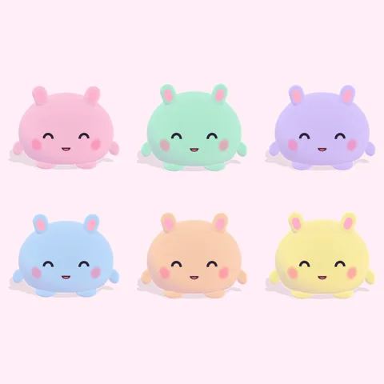
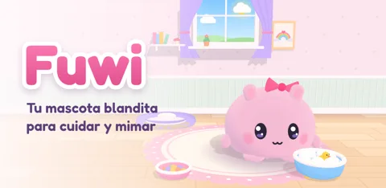
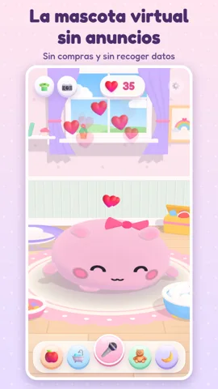
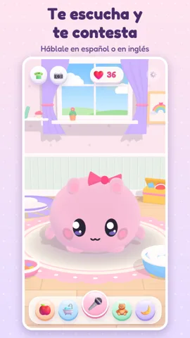
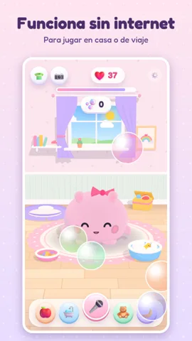
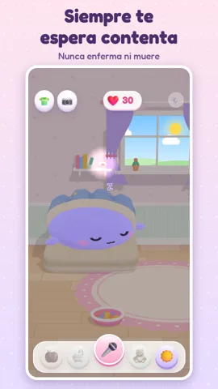

Prensa
Todo lo necesario para hablar de Fuwi: qué es, los datos y las imágenes. Puedes usarlas en artículos sobre Fuwi.
Fuwi en pocas palabras
Fuwi es una mascota virtual en 3D para niños de 3 a 8 años: un mochi, una criatura blandita que nace de un huevo. Los niños le dan de comer, la bañan, juegan con ella y por la noche la acuestan en su cojín, tapada con su edredón.
Lo que la hace distinta es que escucha: los niños le hablan en español o en inglés y les contesta con su vocecita. La voz se entiende en el propio dispositivo y nunca se graba ni se envía. No tiene anuncios ni compras, funciona sin internet y casi sin texto, y nunca enferma ni muere.
Datos
- Precio
- Gratis, sin anuncios y sin compras
- Plataforma
- Android 7.0 o superior, móviles y tablets
- Idiomas
- Español e inglés
- Edad
- De 3 a 8 años
- Privacidad
- No recoge datos. La voz se procesa en el dispositivo. Política de privacidad
- Desarrolla
- Akrogs Labs
- Google Play
- Ficha de Fuwi
- Contacto
- akrogslabs@outlook.com
Imágenes
Icono y personaje
-
 Icono de la app
Descargar PNG · 512×512
Icono de la app
Descargar PNG · 512×512
-
 Fuwi, fondo transparente
Descargar PNG · 1121×877
Fuwi, fondo transparente
Descargar PNG · 1121×877
-

Los seis colores de Fuwi Descargar PNG · 1080×1080 -

Gráfico de Google Play Descargar PNG · 1024×500


Capturas
-

Le acaricias y cierra los ojitos Descargar PNG · 1080×1920 -

Te escucha y te contesta Descargar PNG · 1080×1920 -

Juega a explotar burbujas Descargar PNG · 1080×1920 -

Duerme en su cojín con edredón Descargar PNG · 1080×1920